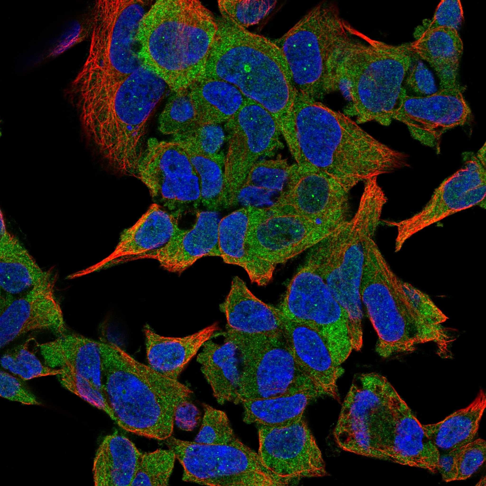
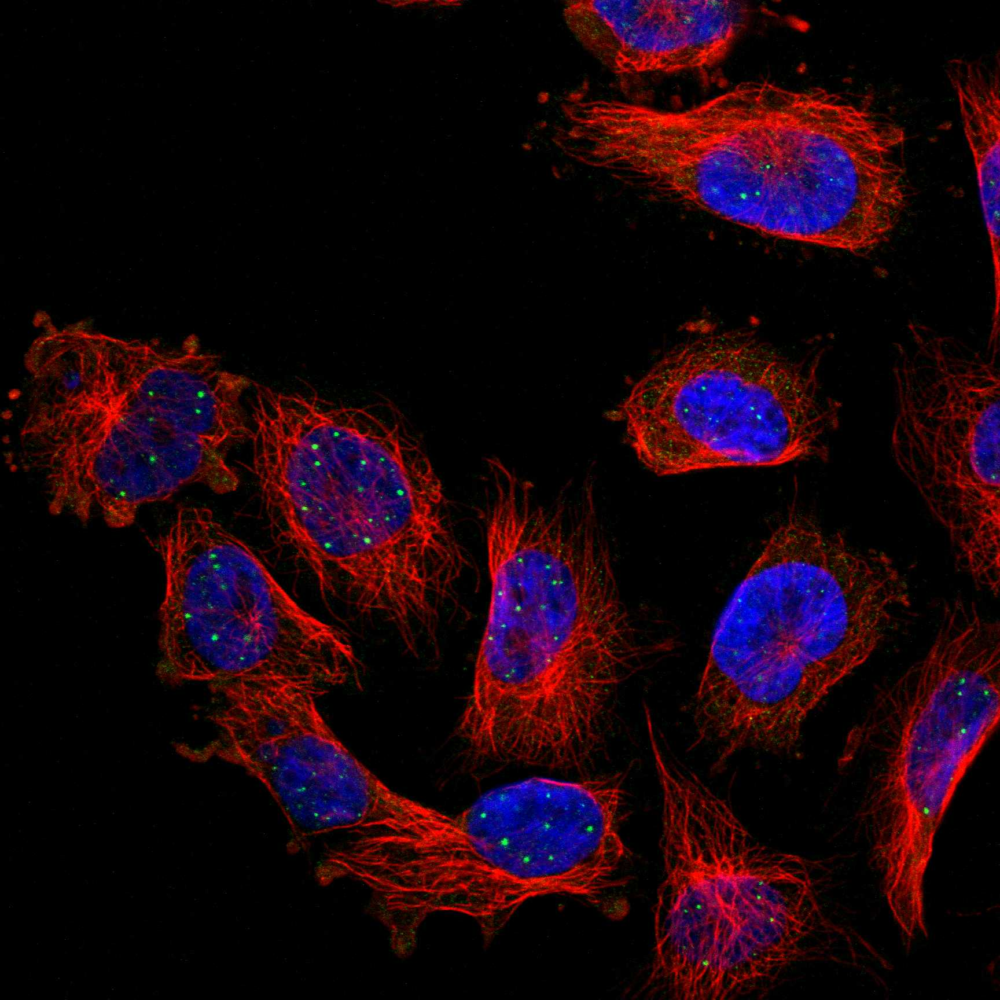

type: protein-evaluation gene: "CAND2" date: 2026-06-03 tags: [protein-scout, nuclear-protein, evaluation] status: scored ---
CAND2 核蛋白评估报告 (Full Re-evaluation)
1. 基本信息
| 项目 | 内容 |
|---|---|
| 基因名 / 别名 | CAND2 / KIAA0667, TIP120B |
| 蛋白名称 | Cullin-associated NEDD8-dissociated protein 2 |
| 蛋白大小 | 1236 aa / 135.3 kDa |
| UniProt ID | O75155 |
| 评估日期 | 2026-06-03 |
IF 图像:  
2. 评分总览
| 维度 | 得分 | 满分 | 加权后 | 关键证据摘要 |
|---|---|---|---|---|
| 🔴 核定位特异性 | 7/10 | ×4 | 28 | HPA: Nuclear bodies; 额外: Cytosol; UniProt: Nucleus |
| 📏 蛋白大小 | 5/10 | ×1 | 5 | 1236 aa / 135.3 kDa |
| 🆕 研究新颖性 | 8/10 | ×5 | 40 | PubMed strict=36 篇 (≤40→8) |
| 🏗️ 三维结构 | 8/10 | ×3 | 24 | AlphaFold v6 pLDDT=87.0; PDB: 8VVY |
| 🧬 调控结构域 | 8/10 | ×2 | 16 | InterPro: IPR011989, IPR016024, IPR039852, IPR013932; Pfam: |
| 🔗 PPI 网络 | 3/10 | ×3 | 9 | STRING 15 partners; IntAct 15 interactions |
| ➕ 互证加分 | — | max +3 | 2.0 | PDB+AF+STRING+IntAct cross-validation |
| 原始总分 | 124.0/180 | |||
| 归一化总分 | 68.9/100 |
3. 详细分析
3.1 核定位证据
| 来源 | 定位 | 可信度 |
|---|---|---|
| Protein Atlas (IF) | Nuclear bodies; 额外: Cytosol | Approved |
| UniProt | Nucleus | Swiss-Prot/TrEMBL |
IF 图像获取: IF图像已下载并嵌入 (2张)
GO Cellular Component:
- cytosol (GO:0005829)
- nucleus (GO:0005634)
结论: 主要核定位，HPA 可靠性良好，有辅助数据源支持。
3.2 蛋白大小评估
评价: 蛋白偏小/偏大，实验操作有一定难度。
3.3 研究现状
| 指标 | 数值 |
|---|---|
| PubMed strict count | 36 |
| PubMed broad count | 51 |
| 别名(未计入scoring) | Aliases observed but not used for scoring: KIAA0667, TIP120B |
关键文献: 1. Molecular mechanisms of CAND2 in regulating SCF ubiquitin ligases.. *Nature communications*. PMID: 40011427 2. Detecting epistasis within chromatin regulatory circuitry reveals CAND2 as a novel susceptibility gene for obesity.. *International journal of obesity (2005)*. PMID: 29717274 3. Anabolism and signaling pathways of phytomelatonin.. *Journal of experimental botany*. PMID: 35430630 4. Phytomelatonin receptor PMTR1-mediated signaling regulates stomatal closure in Arabidopsis thaliana.. *Journal of pineal research*. PMID: 29702752 5. Two G-protein-coupled-receptor candidates, Cand2 and Cand7, are involved in Arabidopsis root growth mediated by the bacterial quorum-sensing signals N-acyl-homoserine lactones.. *Biochemical and biophysical research communications*. PMID: 22206669
评价: 非常新颖，仅有少数基础研究。
3.4 三维结构分析
| 指标 | 数值 |
|---|---|
| AlphaFold 版本 | v6 |
| AlphaFold 平均 pLDDT | 87.0 |
| 高置信度残基 (pLDDT>90) 占比 | 56.5% |
| 置信残基 (pLDDT 70-90) 占比 | 36.1% |
| 中等置信 (pLDDT 50-70) 占比 | 3.4% |
| 低置信 (pLDDT<50) 占比 | 4.0% |
| 有序区域 (pLDDT>70) 占比 | 92.6% |
| 可用 PDB 条目 | 8VVY |
PAE 图像说明: AlphaFold PAE 图像已重新获取并嵌入（见下方 PAE 图像修正块）；结构判断仍结合 pLDDT 与 PAE 综合判断。
评价: AlphaFold 极高置信度预测（pLDDT=87.0，有序区 92.6%），结构可靠。
3.5 结构域分析
| 来源 | 结构域 |
|---|---|
| InterPro/Pfam | InterPro: IPR011989, IPR016024, IPR039852, IPR013932; Pfam: PF13513, PF08623, PF25782 |
染色质调控潜力分析: 多个已知结构域注释，AlphaFold预测质量高，结构域折叠可信。
3.6 PPI 网络
STRING 预测互作 (combined score >0.4):
| Partner | Combined Score | Experimental | 功能类别 |
|---|---|---|---|
| CUL1 | 0.934 | 0.887 | — |
| TBP | 0.721 | 0.128 | — |
| CUL3 | 0.709 | 0.582 | — |
| NEURL1 | 0.635 | 0.000 | — |
| DRG1 | 0.612 | 0.612 | — |
| RBX1 | 0.594 | 0.361 | — |
| SYNPO2L | 0.582 | 0.000 | — |
| CACUL1 | 0.563 | 0.434 | — |
| COPS5 | 0.528 | 0.292 | — |
| UBE3C | 0.513 | 0.295 | — |
实验验证互作 (IntAct):
| Partner | 方法 | PMID | ||
|---|---|---|---|---|
| DNAJB6 | psi-mi:"MI:0399"(two hybrid fragment pooling appro | pubmed:23414517 | imex:IM-16425 | |
| EBI-6248077 | psi-mi:"MI:0007"(anti tag coimmunoprecipitation) | imex:IM-17346 | pubmed:22190034 | |
| BCL2L14 | psi-mi:"MI:0096"(pull down) | pubmed:30833792 | imex:IM-26691 | |
| P2RY6 | psi-mi:"MI:0096"(pull down) | pubmed:30833792 | imex:IM-26691 | |
| SLC15A3 | psi-mi:"MI:0096"(pull down) | pubmed:30833792 | imex:IM-26691 | |
| FHL2 | psi-mi:"MI:0397"(two hybrid array) | pubmed:32296183 | imex:IM-25472 | |
| CIDEB | psi-mi:"MI:0397"(two hybrid array) | pubmed:32296183 | imex:IM-25472 | |
| STOM | psi-mi:"MI:2222"(inference by socio-affinity scori | pubmed:unassigned1312 | ||
| TPTE | psi-mi:"MI:0096"(pull down) | pubmed:28330616 | imex:IM-25671 | |
| SYP | psi-mi:"MI:1356"(validated two hybrid) | pubmed:32296183 | imex:IM-25472 |
PPI 互证分析:
- STRING + IntAct 均有数据
- STRING partners: 15，IntAct interactions: 15
- 调控相关比例: 1 / 15 = 7%
评价: STRING 15 个预测互作，IntAct 15 个实验互作。调控相关配体占比 7%。
3.7 多库互证
| 维度 | 来源 | 结果 | 是否一致 |
|---|---|---|---|
| 三维结构 | AlphaFold pLDDT=87.0 + PDB: 8VVY | pLDDT=87.0, v6 | 预测+实验 |
| 定位 | UniProt + HPA | Nucleus / Nuclear bodies; 额外: Cytosol | 一致 |
| PPI | STRING + IntAct | 15 + 15 interactions | 数据充分 |
互证加分明细:
- PDB + AlphaFold 双源验证: +0.5
- 多库定位一致 (3源): +0.5
- STRING + IntAct 双源验证: +0.5
- 结构域 + AlphaFold 质量: +0.5
- PDB 多条目覆盖: +0
总分: +2.0 / max +3
4. 总体评价
推荐等级: ⭐⭐⭐
核心优势: 1. CAND2 — Cullin-associated NEDD8-dissociated protein 2，非常新颖，仅有少数基础研究。 2. 蛋白大小1236 aa，蛋白偏小/偏大，实验操作有一定难度。
风险/不确定性: 1. PubMed 36 篇，已有一定研究基础 2. 结构数据质量可接受
下一步建议:
- [ ] 查阅最新关键文献补充研究背景
- [ ] 获取 Protein Atlas IF 图像确认亚细胞定位
- [ ] 设计体外实验验证核定位及潜在调控功能
5. 数据来源
- UniProt: https://www.uniprot.org/uniprotkb/O75155
- Protein Atlas: https://www.proteinatlas.org/ENSG00000144712-CAND2/subcellular
- PubMed: https://pubmed.ncbi.nlm.nih.gov/?term=CAND2
- AlphaFold: https://alphafold.ebi.ac.uk/entry/O75155
- STRING: https://string-db.org/network/9606.ENSP00000
- Packet data timestamp: 2026-06-03 04:31:23
<!-- AF_PAE_REPAIR_START --> PAE 图像修正（2026-06-05）: AlphaFold 提供 predicted aligned error 图像；此前“PAE 图像暂无数据”的表述为未获取/未嵌入导致。